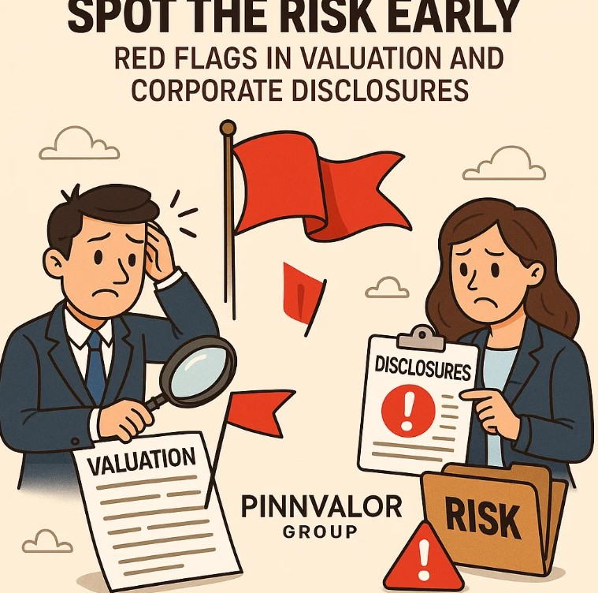

Spot the Risk Early: Red Flags in Valuation and Corporate Disclosures
In today’s complex financial landscape, the accuracy and transparency of corporate disclosures and asset valuations are more critical than ever. Investors, auditors, analysts, and regulators rely heavily on these figures to make informed decisions. However, underlying risks often lurk beneath polished financial statements, making it essential to spot red flags early to avoid costly missteps.
How well can you detect the early warning signs in corporate disclosures and valuations that others might miss?
Financial disclosures and valuations are more than just numbers—they are the heartbeat of transparency. Spotting red flags early can save investors from costly surprises and build trust in every decision made.
This article explores common red flags in valuation and corporate disclosures—warning signals that can indicate potential misstatements, aggressive accounting, or hidden risks.
Why Are Disclosure and Valuation Red Flags Important?
Financial disclosures provide vital insights into a company’s performance, strategy, and risks. Valuations, whether of assets, goodwill, or investments, directly impact reported earnings and balance sheet strength. If these areas are misrepresented, it can lead to:
- Misleading investors and stakeholders
- Inflated asset values or hidden liabilities
- Regulatory penalties and reputational damage
- Poor investment decisions and financial losses
Early detection of red flags enables stakeholders to conduct deeper due diligence and take corrective action promptly.
Common Red Flags in Corporate Disclosures
1. Inconsistent or Vague Disclosures
When companies provide ambiguous, overly broad, or inconsistent information across financial reports, it raises concerns about transparency. Examples include vague explanations of accounting policies or risk factors that lack sufficient detail.
2. Frequent Restatements or Adjustments
Multiple restatements of prior financial statements suggest prior errors or aggressive accounting. Frequent changes undermine confidence in the reliability of disclosures.
3. Delayed or Late Filings
Delays in filing financial reports with regulators can indicate underlying problems or uncertainty in the company’s financial position.
4. Unusual Related-Party Transactions
Complex or non-standard transactions with related parties—such as subsidiaries or insiders—may be used to manipulate earnings or hide liabilities.
5. Excessive Use of Non-GAAP Metrics
Overreliance on non-standard financial metrics that exclude certain expenses or losses can mask the true financial health.
Common Red Flags in Valuation
1. Significant Goodwill or Intangible Assets Without Clear Justification
Large goodwill balances or intangible assets with limited supporting evidence may signal aggressive acquisition accounting or overvaluation.
2. Frequent Impairment Write-offs or Reversals
Unexpected impairments or reversals of asset values suggest poor initial valuation judgments or opportunistic adjustments.
3. Valuations Based on Unverifiable or Highly Subjective Assumptions
When valuations rely heavily on assumptions such as future growth rates, discount rates, or cash flow projections without robust support, the risk of misstatement increases.
4. Significant Differences Between Market and Book Values
Large disparities between market capitalization and reported book values may indicate that the market suspects hidden risks or overvaluation.
5. Complex Valuation Models Without Transparent Methodology
Overly complex models or lack of clarity on valuation methodology can hide manipulation or errors.
How to Spot These Red Flags Early?
- Deep Dive into Footnotes: Financial statements’ footnotes often reveal critical details about accounting policies, assumptions, and contingencies.
- Compare Historical Data: Look for sudden changes or inconsistencies in disclosures and valuations over time.
- Analyze Cash Flows vs. Earnings: Significant gaps between reported earnings and cash flows can indicate earnings management.
- Benchmark Against Peers: Compare valuation multiples and disclosures with industry peers to identify outliers.
- Stay Updated on Regulatory Filings: Track filing timelines and audit opinions for signs of concern.
Conclusion
Spotting red flags in valuation and corporate disclosures is a crucial skill for anyone involved in financial analysis, investment, or auditing. While not all red flags point to fraud or misstatement, they serve as early warnings to dig deeper and understand the real financial health of an organization.